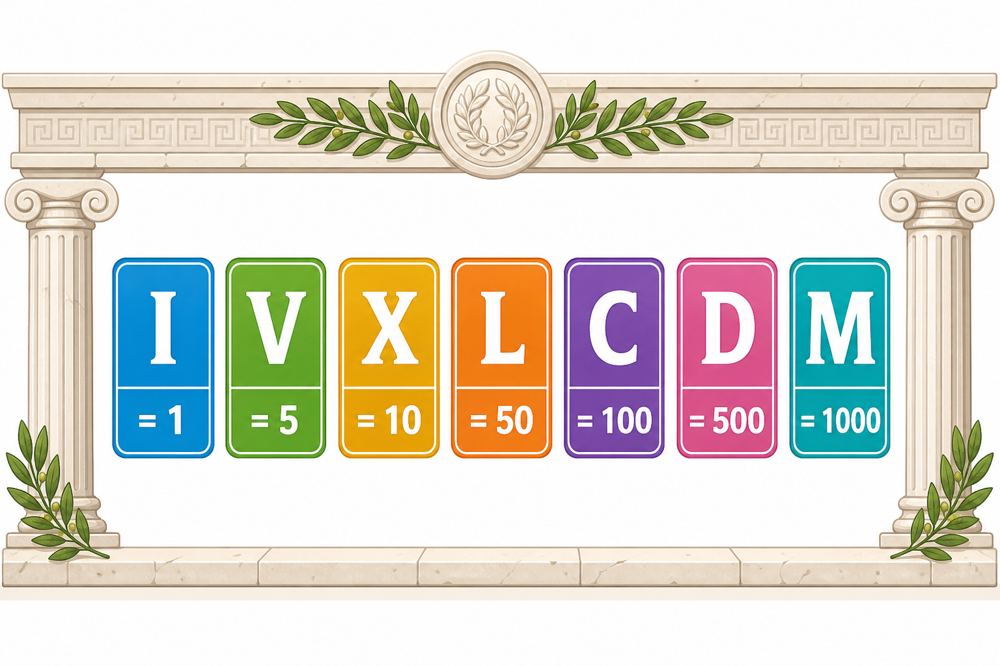

Co to jest? Що це?
Dawniej Rzymianie pisali liczby literami. Siedem znaków wystarczy, by złożyć inne liczby.
Колись римляни писали числа літерами. Семи знаків досить, щоб скласти інші числа.
Jak w szkole? Як у школі?
Zapamiętaj jak piosenkę: I=1, V=5, X=10, L=50, C=100, D=500, M=1000.
Запам'ятай як пісню: I=1, V=5, X=10, L=50, C=100, D=500, M=1000.
Przykład z życia Приклад з життя
Na starym zegarze zamiast 4 widzisz IV — to znak rzymski.
На старому годиннику замість 4 бачиш IV — це римський знак.
I=1 V=5 X=10 L=50
C=100 D=500 M=1000
C=100 D=500 M=1000